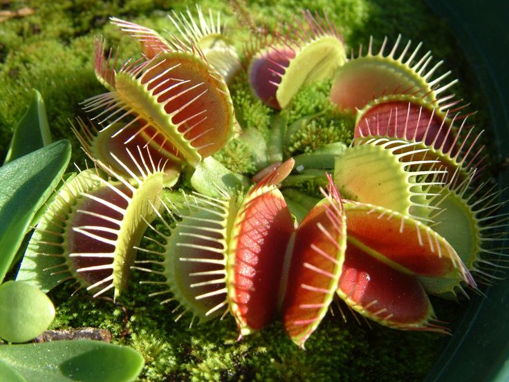
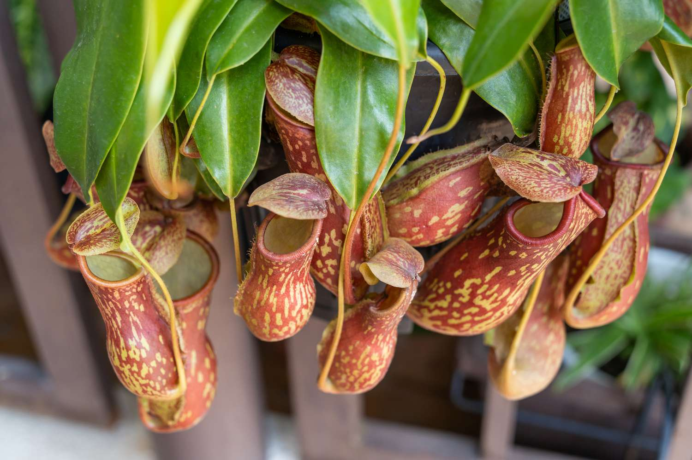

What are Carnivorous Plants?
Carnivorous plants attract, trap, and digest animals to obtain the nutrients they contain. There are currently around 630 known species of carnivorous plants. Most carnivorous plants eat insects, but some larger species can digest reptiles and even small mammals. Smaller carnivorous plants may feed on single-celled organisms, such as bacteria and protozoa. Aquatic carnivorous plants can also eat crustaceans, mosquito larvae, and small fish. Carnivory is an efficient adaptation that has evolved independently several times in unrelated plant families. This means that different types of plants developed the ability to eat prey without being closely related to one another. Although carnivorous plants get extra nutrients from their prey, they still need photosynthesis to produce energy. They also rely on their roots or other structures to absorb water and minerals from their environment. Overall, carnivory helps these plants survive and make the most of the limited nutrients available in their habitats.

What kind of habitats do they live in?
Carnivorous plants are generally found in habitats with three major characteristics: abundant sunlight, clean water, and nutrient-poor soil. These plants often grow in areas where the soil does not contain enough nutrients, especially nitrogen, for most plants to thrive. Sphagnum moss is a useful indicator of a suitable habitat because it commonly grows in the same wet, acidic environments as many carnivorous plants. Warm temperatures and high humidity are also common conditions for carnivorous plant habitats. The savannahs and wetlands of the southeastern United States are especially rich in carnivorous plants, with many species found along the coastal Carolinas. The Wilmington, North Carolina, area is known for its extremely nutrient-poor soil and is the only natural habitat of the Venus flytrap. Carnivorous plants can be found in many different environments around the world, ranging from the Arctic regions to tropical areas. There are more than 450 known species of carnivorous plants worldwide. They have adapted to survive in a wide variety of climates and environments where other plants may struggle to get enough nutrients. Antarctica is the only continent where carnivorous plants do not naturally occur.
What are the most commonly kept carnivorous plants?
- Venus Flytrap (Dionaea muscipula)
- Sundew (Drosera)
- North American Pitcher Plant (Sarracenia)
- Butterworts (Pinguicula)
